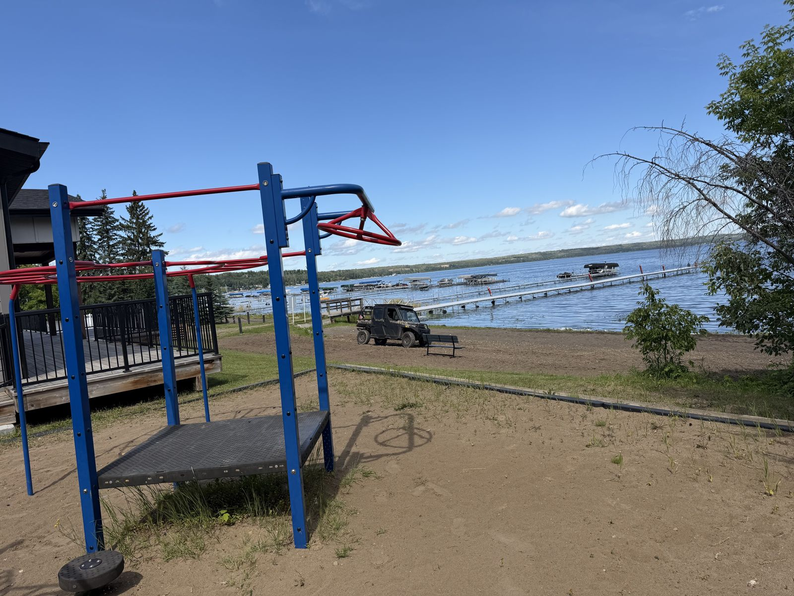
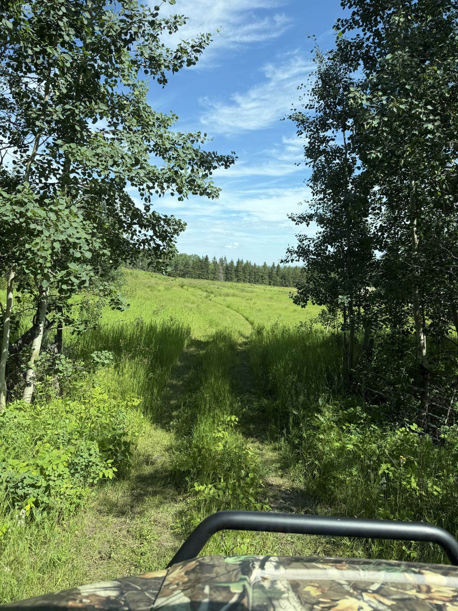
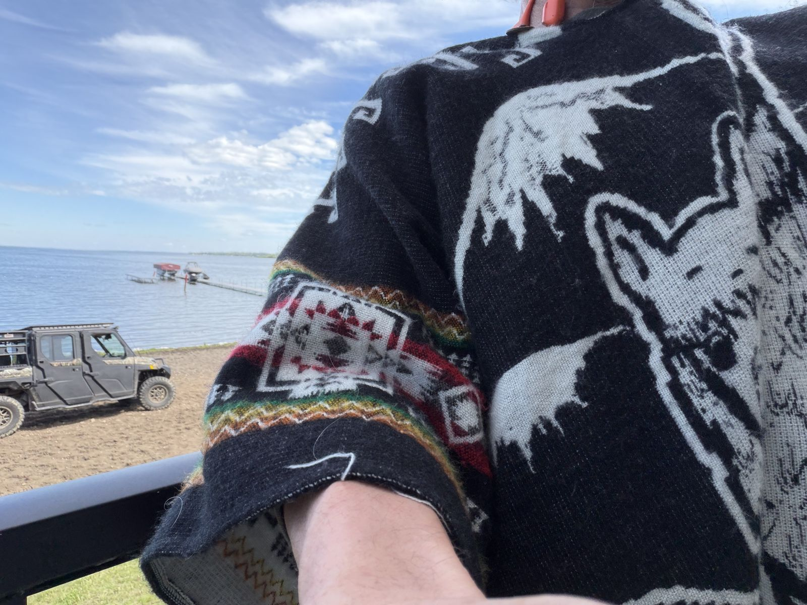

1
Creek Property — The Starting Point
“We started at the Creek Property — got out, walked across the deck and down to the creek. Anyone can walk through it right now.”
What the photos show: A double-lot creek property: an old white single-story house with a covered deck, a firewood-stacked canvas shed, and a sloped grassy yard running down toward the brushy treeline where the creek reportedly runs. A mown double-track trail leads out through a tall-grass field, with the pavilion beach and docks just across the road.




